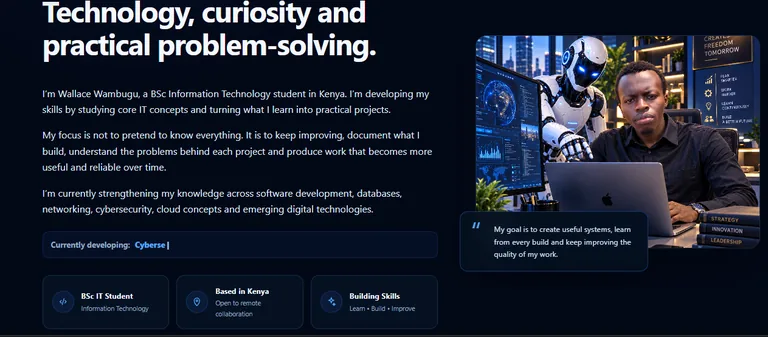
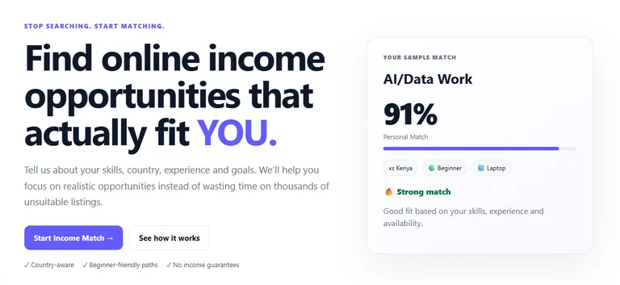
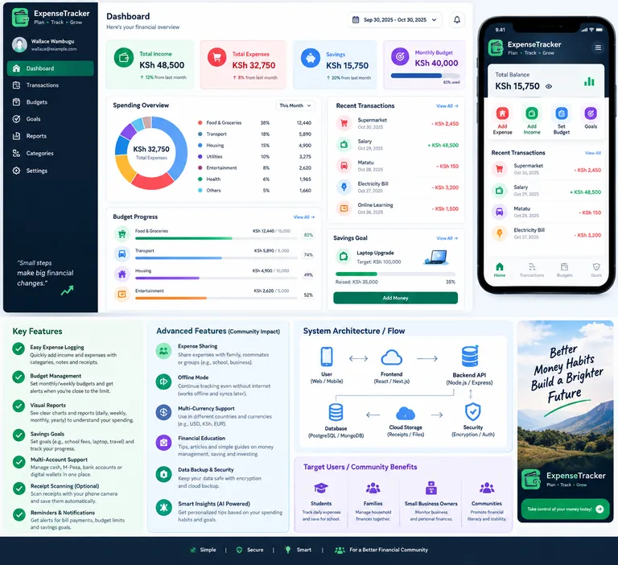
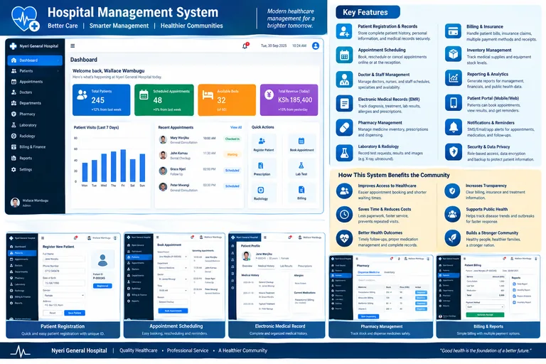
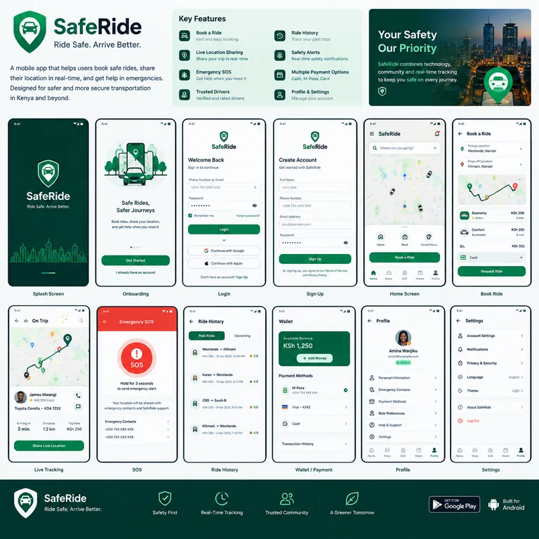
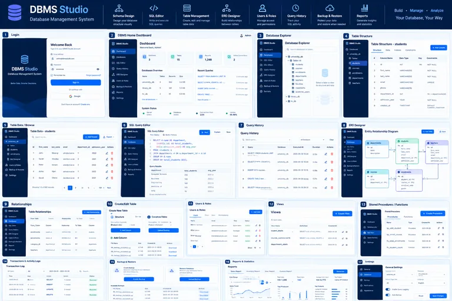

LIVEPersonal technology portfolio
WALLACE.DEV
An evolving portfolio designed to present real projects, technical growth and inspectable evidence without inventing experience.
Project evidence
Each project page separates what exists today from what is still being designed, developed, tested or planned.

LIVEPersonal technology portfolio
An evolving portfolio designed to present real projects, technical growth and inspectable evidence without inventing experience.

IN DEVELOPMENTProduct project
An active project exploring a more systematic way to help people evaluate remote-income opportunities. Only verified implementation evidence is presented as completed.

DESIGN COMPLETEApplication design
A completed interface design prepared for future implementation. Development, database behavior and results are intentionally not claimed yet.

DESIGN COMPLETEInformation system design
An information-system interface design prepared for future implementation. No hospital modules are claimed as implemented until working evidence exists.

DESIGN COMPLETEMobile application design
A mobile interface design prepared for implementation. Framework, navigation logic, APIs and data handling remain unclaimed until development begins.

DESIGN COMPLETEDatabase project design
A database-oriented project at the design stage. Schema, queries, constraints and database-engine claims will be added only when verified from the implementation.